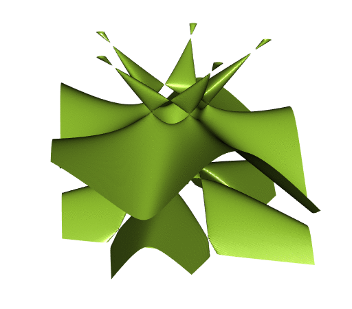
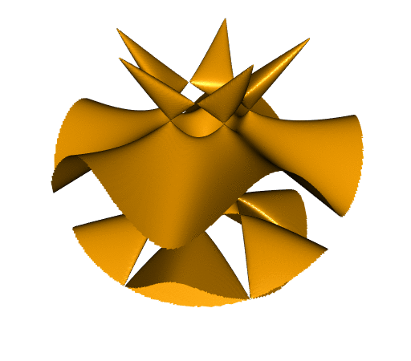
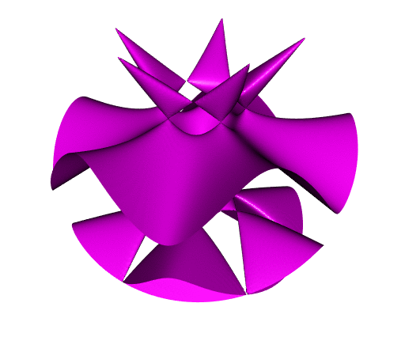

Clipping an isosurface to a ball, and more
We will firstly show how to clip an isosurface to a ball with R, and then, more generally, how to clip a surface to an arbitrary region. In the last part we show how to achieve the same with Python.
Using R
The Togliatti isosurface, clipped to a box
The Togliatti surface is the isosurface \(f(x, y, z) = 0\), where the function \(f\) is defined as follows in R:
f <- function(x,y,z){
64*(x-1)*
(x^4-4*x^3-10*x^2*y^2-4*x^2+16*x-20*x*y^2+5*y^4+16-20*y^2) -
5*sqrt(5-sqrt(5))*(2*z-sqrt(5-sqrt(5)))*(4*(x^2+y^2-z^2)+(1+3*sqrt(5)))^2
}To plot an isosurface in R, there is the misc3d package. Below we plot the Togliatti surface clipped to the box \([-5,5] \times [-5,5] \times [-4,4]\).
library(misc3d)
# make grid
nx <- 220L; ny <- 220L; nz <- 220L
x <- seq(-5, 5, length.out = nx)
y <- seq(-5, 5, length.out = ny)
z <- seq(-4, 4, length.out = nz)
G <- expand.grid(x = x, y = y, z = z)
# calculate voxel
voxel <- array(with(G, f(x, y, z)), dim = c(nx, ny, nz))
# compute isosurface
surf1 <-
computeContour3d(voxel, maxvol = max(voxel), level = 0, x = x, y = y, z = z)
# make triangles
triangles <- makeTriangles(surf1, smooth = TRUE)drawScene.rgl(triangles, color = "yellowgreen")
It is fun, but you will see later that it is prettier when clipped to a ball. And it is desirable to get rid of the isolated components at the top.
The simplest way to clip the surface to a ball consists in using the mask argument of the function computeContour3d. We use \(4.8\) as the radius.
mask <- array(with(G, x^2+y^2+z^2 < 4.8^2), dim = c(nx, ny, nz))
surf2 <- computeContour3d(
voxel, maxvol = max(voxel), level = 0, mask = mask, x = x, y = y, z = z
)
triangles <- makeTriangles(surf2, smooth = TRUE)
drawScene.rgl(triangles, color = "orange")
That’s not bad, but you see the problem: the borders are not smooth.
Resorting to spherical coordinates
Using spherical coordinates will allow us to get the surface clipped to the ball with smooth borders. Here is the method:
# Togliatti surface equation with spherical coordinates
h <- function(ρ, θ, ϕ){
x <- ρ * cos(θ) * sin(ϕ)
y <- ρ * sin(θ) * sin(ϕ)
z <- ρ * cos(ϕ)
f(x, y, z)
}
# make grid
nρ <- 300L; nθ <- 300L; nϕ <- 300L
ρ <- seq(0, 4.8, length.out = nρ) # ρ runs from 0 to the desired radius
θ <- seq(0, 2*pi, length.out = nθ)
ϕ <- seq(0, pi, length.out = nϕ)
G <- expand.grid(ρ=ρ, θ=θ, ϕ=ϕ)
# calculate voxel
voxel <- array(with(G, h(ρ, θ, ϕ)), dim = c(nρ, nθ, nϕ))
# calculate isosurface
surf3 <-
computeContour3d(voxel, maxvol = max(voxel), level = 0, x = ρ, y = θ, z = ϕ)
# transform to Cartesian coordinates
surf3 <- t(apply(surf3, 1L, function(ρθϕ){
ρ <- ρθϕ[1L]; θ <- ρθϕ[2L]; ϕ <- ρθϕ[3L]
c(
ρ * cos(θ) * sin(ϕ),
ρ * sin(θ) * sin(ϕ),
ρ * cos(ϕ)
)
}))
# draw isosurface
drawScene.rgl(makeTriangles(surf3, smooth=TRUE), color = "violetred")Now the surface is pretty nice. The borders are smooth.
Another way: using the rgl package
Nowadays, in the rgl package, there is the function clipMesh3d which allows to clip a mesh to a general region. In order to use it, we need a mesh3d object. There is an unexported function in misc3d which allows to easily get a mesh3d object; it is called t2ve.
We start with the isosurface clipped to the box:
triangles <- makeTriangles(surf1)
# convert to rgl `mesh3d`
mesh <- misc3d:::t2ve(triangles)
rglmesh <- tmesh3d(mesh$vb, mesh$ib)To define the region to which we want to clip the mesh, one has to introduce a function and to give a bound for this function. Here the region is \(x^2 + y^2 + z^2 < 4.8^2\), so we proceed as follows:
fn <- function(x, y, z) x^2 + y^2 + z^2 # or function(xyz) rowSums(xyz^2)
clippedmesh <- addNormals(clipMesh3d(
rglmesh, fn, bound = 4.8^2, greater = FALSE
))It is a bit slow. Probably the algorithm is not very easy. But we get our desired result:
shade3d(clippedmesh, color = "magenta")
Using Python
With the wonderful Python library PyVista, we proceed as follows to create the mesh of the Togliatti isosurface:
from math import sqrt
import numpy as np
import pyvista as pv
def f(x, y, z):
return (
64
* (x - 1)
* (
x ** 4
- 4 * x ** 3
- 10 * x ** 2 * y ** 2
- 4 * x ** 2
+ 16 * x
- 20 * x * y ** 2
+ 5 * y ** 4
+ 16
- 20 * y ** 2
)
- 5
* sqrt(5 - sqrt(5))
* (2 * z - sqrt(5 - sqrt(5)))
* (4 * (x ** 2 + y ** 2 - z ** 2) + (1 + 3 * sqrt(5))) ** 2
)
# generate data grid for computing the values
X, Y, Z = np.mgrid[(-5):5:250j, (-5):5:250j, (-4):4:250j]
# create a structured grid
grid = pv.StructuredGrid(X, Y, Z)
# compute and assign the values
values = f(X, Y, Z)
grid.point_data["values"] = values.ravel(order="F")
# compute the isosurface f(x, y, z) = 0
isosurf = grid.contour(isosurfaces=[0])
mesh = isosurf.extract_geometry()To plot the mesh clipped to the box:
# surface clipped to the box:
mesh.plot(smooth_shading=True, color="yellowgreen", specular=15)The remove_points method is similar to the mask approach with misc3d (it produces non-smooth borders):
# surface clipped to the ball of radius 4.8, with the help of `remove_points`:
lengths = np.linalg.norm(mesh.points, axis=1)
toremove = lengths >= 4.8
masked_mesh, idx = mesh.remove_points(toremove)
masked_mesh.plot(smooth_shading=True, color="orange", specular=15)To get smooth borders, you have to use the clip_scalar method:
# surface clipped to the ball of radius 4.8, with the help of `clip_scalar`:
mesh["dist"] = lengths
clipped_mesh = mesh.clip_scalar("dist", value=4.8)
clipped_mesh.plot(
smooth_shading=True, cmap="inferno", window_size=[512, 512],
show_scalar_bar=False, specular=15, show_axes=False, zoom=1.2,
background="#363940"
)